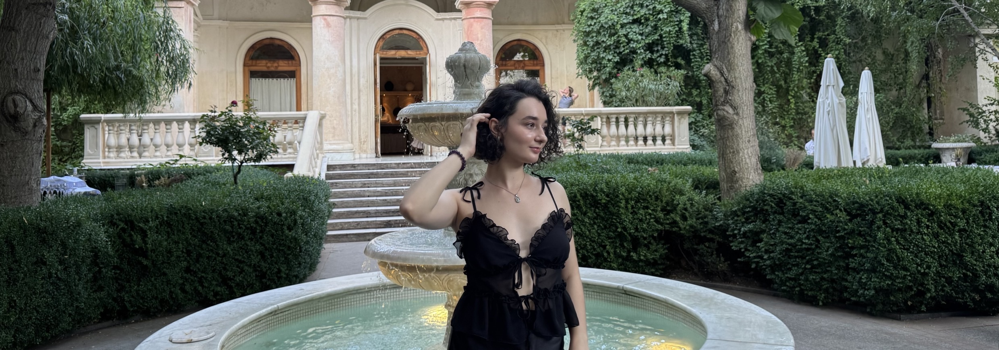

THE STORY BEHIND THE SCREENS.
Not just the projects you see here, but the journey, lessons, and little things that shaped me as a designer.
Designing since 2022
SCROLL ↓

The beginning.
There'll be no story about how I was super creative as a kid and that's why I became a designer.
After school, I chose to study Computer Science at university. At the time, it felt like the right direction because I genuinely enjoyed taking apart my PC and figuring out how things worked. But during my first year, I realized I didn't actually enjoy writing code as much as I thought I would.
So in 2022, I signed up for my first online course - Web Design Basics. I was juggling university and design classes at the same time... crazy as fuck, honestly. Somehow I finished both: the course and my first year at university.
After that, I joined a more advanced course, UI/UX Design Pro. That's when it clicked. I realized design was something I genuinely loved doing - a place where I could solve problems, be creative, and express myself at the same time.
First experience.
My first job happened in 2023, while I was still at university. I joined the Spacebring team after a friend recommended me for a designer role.
It was a really interesting journey because I genuinely thought I knew a lot about design. Turns out... not even close. I think real knowledge comes from practice. At Spacebring, I worked on things I'd never touched in any of the courses I'd taken.
Spacebring gave me the opportunity to keep learning, and during those three years I also completed Web Design Junior and Marketing Design courses.
In 2026, my story with Spacebring came to an end.
Outside of work.
I'm such a traveler. It's what makes me feel the most alive. I love exploring different cultures, trying food I've never had before, and meeting people from completely different parts of the world. So far I've been to Romania, Greece, Thailand, Malaysia, Indonesia, Poland, and Egypt.
I also take my little old Samsung digital camera everywhere I go. I love the grainy, imperfect photos it creates - they always feel a bit more real than pictures from my phone.
Music is a huge part of my life too. I'm literally listening to music while writing this. It follows me through almost everything: workouts, cooking, walking, working... pretty much life. My playlist is all over the place - Guns N' Roses, Michael Jackson, Justin Timberlake, A$AP Rocky, Lana Del Rey, Rihanna, and many more lol.